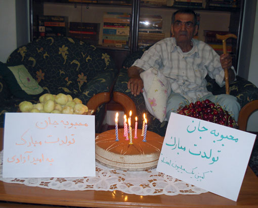
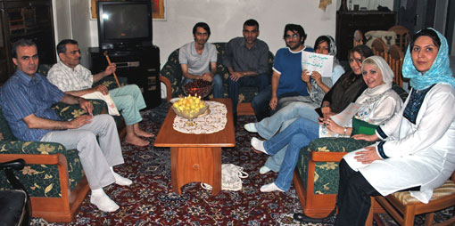
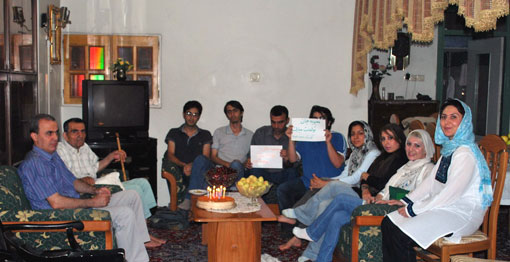

پذيرش > تریبون > مصاحبه با برادر محبوبه کرمی در خصوص پرونده وی

 مصاحبه با برادر محبوبه کرمی در خصوص پرونده وی مصاحبه با برادر محبوبه کرمی در خصوص پرونده وی
17 خرداد 1389 - - نسخه قابل چاپ
تغییر برای برابری- روز شنبه پانزدهم خردادماه، تولد محبوبه کرمی بود که به این مناسبت شب پیش از آن، زندانیان زن سیاسی که در بند نسوان اوین حضور داشتند، برای وی جشن کوچکی برگزار کردند. همچنین به این مناسبت، جمعی از فعالان کمپین یک میلیون امضاء به دیدار خانواده وی رفتند. در این دیدار، گفتگوی کوتاهی با برادر محبوبه، صورت گرفت که شرح آن در ادامه آمده است.
آقای کرمی، اگر ممکن است به طور مختصر توضیح دهید که روند بازداشت، پرونده و پیگیری های شما در این مدت به چه صورت بوده؟
محسن کرمی: بازداشت محبوبه 11 اسفند 88 اتفاق افتاد، مأموريني كه به خانه مراجعه كردند 3 نفر بودند كه با حكم دادستاني براي بازداشت آمدند و مقداري از وسايل شخصي محبوبه را نيز ضبط كردند و خود او را بردند. بعد از يك هفته، متوجه شديم كه او در زندان اوين بازداشت است و طي تماسي كه داشت اطلاع داد كه در بند 2 الف سپاه نگه داشته می شود. روز اول فروردين طي تماسي كه از طريق مأمورين دادسراي مستقر در اوين با ما گرفته شد توانستيم حضوراً او را ملاقات كنيم كه در این ملاقات محبوبه به ما گفت که در روز اول بازداشت اش توسط یکی از بازجویان مورد بدرفتاری و زد و خورد قرار گرفته که با توجه به افسردگی که محبوبه داشت و شرایط جسمانی ضعیف او، این مسئله خیلی نگران کننده بود.

در این مدت، بصورت مكرر به دادگاه انقلاب مراجعه كردم كه تا امروز هميشه جواب اين بوده كه پرونده هنوز در دادگاه انقلاب نیامده و در داسرای مستقر در اوین است. من هم براي تقاضاي ملاقات حضوري و اطلاع از وضعيت محبوبه به دادستاني مراجعه كردم. زمانی که سرانجام موفق به ملاقات با آقاي دولتآبادي شدم، گفتند که همان روز ايشان را در زندان ملاقات كرده. در این دیدار ايشان گفتند که از نظر روحي به نظر ميرسد فشار زيادي به محبوبه وارد شده است. به همین خاطر، قول دادند كه با قاضي پرونده صحبت كنند. راجع به اتهامات وارد شده صحبت كرديم كه ايشان از سه ايميل صحبت كردند كه پرينت گرفته شده بود و من که ایمیل های را خواندم، به نظرم هيچ مطلبي از اين ايميلها جرم تلقي نميشود و تنها اخباری که در رسانه های دولتی منتشر شده بود را در ایمیل ها مطرح کرده بود. در واقع این ایمیل ها بیان کننده هیچ مطالب سری نبود، بلکه اطلاعات واقعي بوده كه ذكر آن خلاف نيست و گزارش واقعيت است. همينطور دادستان به من گفت که عضويت محبوبه، در مجموعه فعالان حقوق بشر به عنوان اتهام توسط دادستان بعنوان خلاف اعلام شده و دادستان اعلام كرده كه قبلاً توسط دادستاني طي اعلاميهاي همكاري با اين گروهها جرم اعلام شده بوده كه البته محبوبه به اين اطلاعيه وقوف نداشت و همينطور آخرين فعاليت محبوبه نيز قبل از اين اطلاعيه دادستاني بوده است. با وجود قول دادستانی،نه تنها وضعیت پرونده محبوبه تغییری نکرد بلکه حدود 17 روز بدون خبر از او بودیم و حتا هیچ گونه تماسی هم نگرفت. پس از آن به بند عمومی نسوان اوین منتقل شد که متوجه شدیم در این مدت بازجویی های وی تمام شده بود. به همین دلیل، ادامه بازداشت محبوبه صحیح نبود. ما هم باتوجه به اينكه بیش از سه ماه از بازداشت محبوبه می گذرد اما نه تقليل یا حتا تمديد قرار اوليه اتفاق افتاده، خواستيم كه وثيقه صادر شود. محبوبه هم اعتراضي را به شعبه 3 دادسراي مستقر در اوین نوشته كه با تقليل قرار بازداشت به وثيقه موافقت كنند، اما هنوز هیچ جوابي نگرفته ايم.
تاكنون تفهيم اتهام محبوبه چه بوده است؟
اطلاعرساني و گزارش توسط ايميلها، عضويت در مجموعه فعالان حقوق بشر، عضويت در كمپين يكميليون امضاء، و شركت در تجمعات غيرقانوني.
وكلای محبوبه در این مدت چه كارهائي را انجام دادهاند؟
چون هنوز پرونده ارجاع نشده به دادگاه انقلاب و هنوز در داسرای اوین است، وكلا به پرونده و متهم دسترسي ندارند و به همين دليل هيچكدام موفق نشدند موكلشان را ببينند يا پرونده را مطالعه كنند.

وضعيت جسمي و روحي محبوبه چطور است؟
يش از بازداشت بخاطر اتفاقاتي كه در خانواده ما در سال گذشته اتفاق افتاد و تألمات روحي كه محبوبه داشت وي تحت مداوا قرار گرفته بود و وقتي كه مسئله بازداشت او به وجود آمد فشارها مضاعف بود و همينطور مدت طولاني كه او در انفرادي بود صدمات روحي زيادي را به او وارد كرد.
محبوبه چند روز در انفرادي بود؟
از زمان بازداشت تا سهشنبه پيش كه به بند عمومي منتقل شده تماماً در انفرادي بود كه حدوداً 80 روز ميشود. نگهداري بيش از اندازه محبوبه در انفرادي و برخورد نامناسب بازجوها در بدو ورود و اطمينان محبوبه از اينكه هيچ اقدام مجرمانهاي انجام نداده، فشارهاي روحي محبوبه را تشديد كرده است و آخرين باري كه من ايشان را ديدم از نظر روحي تحت فشار زيادي بود.
امروز تولد محبوبه است، آيا با او تماسي داشتيد؟
بله امروز محبوبه تماس گرفت و گفت كه ديشب (14 خرداد) همسلوليهايش براي او تولدگرفتند.
چندبار با او ملاقات حضوري داشتيد؟
سه مرتبه ملاقات حضوري و يكمرتبه كابيني.
تماسهاي او چگونه است؟
اكنون كه در بند عمومي نگهداري ميشود تقريباً هرروز تماس ميگيرد ولي پيش از آن وقتي كه از بند 2 الف سپاه منتقل شد، 18 روز را در قرنطينه نگهداشتند كه در طول اين مدت به تلفن دسترسي نداشت. پس از آن نیز یک بار به مدت 11 روز از او بی خبر بودیم.
شنيدهايم كه از او مصاحبه جلوي دوربين گرفتند؟
بله، ولي مصاحبهاي كه از افراد گرفتهاند، ظاهراً خلاصهاي از مراحل بازجويي را بصورت ويدئويي درآوردهاند و همان سؤالات بازجويي را چندنفر بطور تكتك و جداگانه جلوي دوربين پرسيدهاند و محبوبه هم همان جوابهاي بازجويي را گفته و ضبط شده است.

آيا تاكنون توانستهايد وسايل شخصي يا كتاب به او برسانيد؟
بله. طبق روال، زندانيهای بخش عمومی ميتوانند در بهار مقداري لباس و وسايل شخصي تحويل بگيرند كه 17 ارديبهشت من توانستم مقداري لباس مناسب فصل براي او ببرم چون محبوبه را زمستان بازداشت كرده بودند و او را با لباسهاي زمستاني و پالتو و چكمه دستگير كردند. همچنين هنگامي كه در بند الف 2 سپاه بود 4 كتاب براي او بردم كه 2 تا از آنها را كه يكي ديوان حافظ و ديگري يك كتاب تاريخي بود انتخاب كرده و براي او بردند. با این حال لباس هایی که اردیبهشت به او رساندیم تازه به دستش رسیده است.
ارسال به
بالاترین
،
توییتر
،
فریندفید
،
فیسبوک
در همين بخش :
 دهمین دورۀ مراسم تندیس صدیقه دولت آبادی ۱۳۹۲ دهمین دورۀ مراسم تندیس صدیقه دولت آبادی ۱۳۹۲
کارت پستالهایی به بهانهی هشت مارس و به یاد همهی مبارزین راه برابری
بیانیه بیش از 350 تن از مدافعان حقوق زنان به مناسبت روز جهانی زن؛ زنان هر روز فرودستتر میشوند
لباسی که برای تن ما دوخته اند! /اعظم بهرامی
چالشها و چشمانداز فعالیت مدنی زنان
ديگر بخش ها :
طرح یک میلیون امضا
|
مقالات
|
سایت نوشته ها
|
اخبار
|
گزارش كمپين
|
گفت و گو
|
علیه سکوت
|
كوچه به كوچه
|
نامه های شما
|
گزارش ویژه
|
گفتگو با اعضا
|
ویژه سالگرد کمپین
|
تصویر برابری
|
دل آرام علی
|
تریبون
|
مقالات
|
تاریخ شفاهی
|
خارج از چارچوب
|
کتابخانه
|
درباره کمپین
|
کمپین در شهرها
|
کمپین در بند
|
صدای تغییر
|
ویژه 22 خرداد
|
لایحه حمایت از خانواده
|
گالری
|
عشا مومنی
|
امیر یعقوبعلی
|
خدیجه مقدم
|
راحله عسگری زاده و نسیم خسروی
|
پروین اردلان،جلوه جواهری، مریم حسین خواه، ناهید کشاورز
|
زینب پیغمبرزاده
|
سعیده امین، سارا ایمانیان، محبوبه حسین زاده، ناهید کشاورز و همایون نامی
|
احترام شادفر
|
نسیم سرابندی زاده،فاطمه دهدشتی
|
وبلاگ مهمان
|
پرونده خرم آباد
|
دستگیری ها
|
مریم مالک
|
پرستو اللهیاری
|
مهرنوش اعتمادی
|
سمیه رشیدی
|
Other Languages
|
همراهان
|
«فراخوان کمپین ده روز با بهاره هدایت»
| English
|